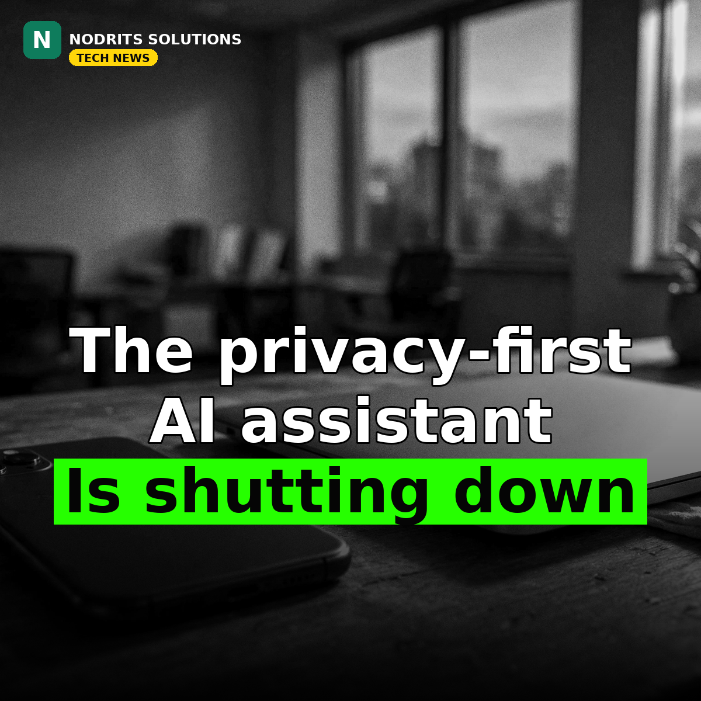

The Privacy-First AI Assistant Is Shutting Down: What Ollie's End Says About the AI Market

The privacy-first AI assistant is shutting down. Ollie, a startup whose mission was to deliver an AI assistant that respected its users' privacy, announced on October 30, 2026 that it will close on November 6 — and its founder's explanation is a warning for every principled startup in AI.
What happened
Co-founder and CEO Bill Lennon announced the shutdown on X on Friday, October 30, saying the app will officially shut down on November 6, with instructions on how to export data and receive refunds coming to customers in the following days. Ollie had discussed its $7.5 million seed round led by Khosla Ventures with TechCrunch in September. It offered a subscription-based, text-based AI assistant — no ads, no data selling — and was one of the first mainstream apps to achieve SOC 2, a privacy and security compliance standard attained through independent audit. Lennon's explanation was blunt: “We got close, but ultimately couldn't keep up.” With Muse, Instinct and others entering the space, he said, “it became harder to stand out, grow, and raise the capital we needed to succeed.”
Why it matters
Ollie's failure is not a failure of its idea — it is a failure of its moat. As models improved over the past year, the text-based assistant market exploded, and the giants arrived with distribution no startup can buy: pre-installed apps, existing user bases, and the capital to lose money on every query while a startup counts tokens. Privacy is a feature users praise and a cost they rarely pay for when the free, convenient alternative is one tap away. That is the harsh lesson: in a market where the model is increasingly a commodity, distribution and capital decide survival, and a principled product without either is a demo, not a business. The SOC 2 badge proves Ollie did privacy properly — and still lost. That says more about the market than about Ollie.
What it means for you
If you build products, find distribution before you perfect the feature — a great value nobody discovers is not a moat. If you use AI tools, plan your data export before you need it: Ollie's customers got export instructions, but many shutdowns do not offer them. And if you care about privacy, support the tools that protect it while they exist — voting with your wallet is the only signal a market like this reads.
The Nodrits take
The market punished principle — or, more fairly, it ignored it. Users say they want privacy; they pay for convenience. Would you pay extra for a privacy-first AI assistant, or is free and convenient always going to win? Tell us in the comments on today's post.
Need a website, SaaS product or AI workflow built right?
Nodrits Solutions designs, develops and automates for businesses in Pakistan, the USA, UK, UAE and Saudi Arabia.
Talk to Nodrits →Sources: TechCrunch (October 30, 2026); CEO Bill Lennon's announcement on X. Shutdown date, funding and quotes as reported.. Published October 31, 2026.